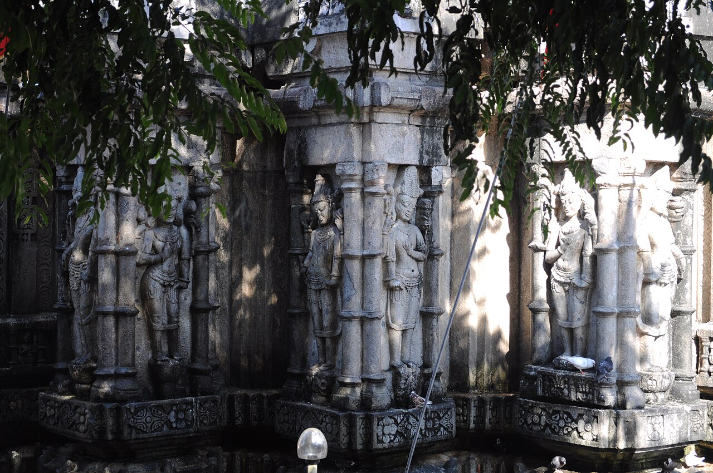

Wikimedia Commons · CC BY 2.0 ⇗
Sthala Puranam
On the Nilachal hills above Guwahati, the Kamakhya temple is the greatest Shakti siddharupa of eastern India. The Kamarupa Pitham, seat of Kamakhya, is the place where the yoni (womb) of Sati is believed to have fallen — the wellspring of all creation.
Explanation
The sanctum holds no image: a fissure in the rock at the level of a lotus pond is worshipped as the Goddess herself, the source of life that menstruates the earth. Kamakhya is the Goddess of desire and union, praised by the Yogini tantras and the Devi Bhagavata as the highest manifestation. The Nilachal hills bear a remarkable chain of shrines to the Mahavidyas around the main temple. The most famous festival is the Ambubachi Mela in the month of Ashadha, when the temple closes for three days during the earth's purification and reopens amid great celebration.
Why the temple is revered
Kamakhya is revered as the Mother of the universe in her most intimate aspect — the creative power behind all forms. Tantra sadhana has made this one of the most powerful spiritual stations in India, and the Ambubachi Mela draws lakhs of devotees seeking the Goddess's Shakti as the principle of life itself. Beginning with the Shakti Peetha stotram and continuing through the Tantras, every tradition bows to Kamakhya as the primordial womb.
🕉 Story
Kamakhya is one of the most important Shakta pilgrimage centres in India and is strongly associated with Tantric traditions.
✨ Significance
The temple is a major centre of Shakti worship and the annual Ambubachi Mela is particularly significant.